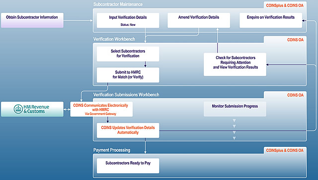
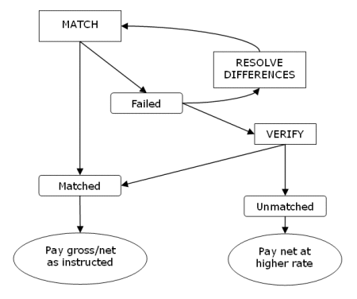
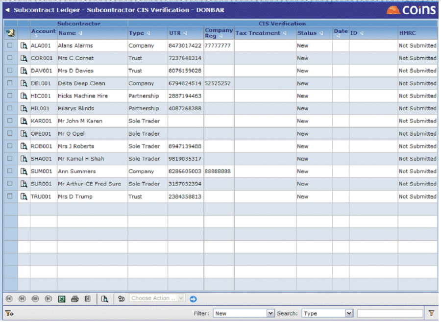

Electronic Verification
Under this method, you input the basic CIS details in and then submit this to HMRC from using Verification. The verification details will be received back into and updated without the need for manual user input. A verification workbench ( Verification Submissions) allows you to manage this process. This option is only available within OA. It relies on successful electronic communication between your server and HMRC. In case of communication problems, you can use the off-line verification method as a fallback.
Diagram

 View high-resolution PDF diagram
View high-resolution PDF diagram
When using electronic verification there are three different modes: "Match", Verify" and "Auto".
For subcontractors whose details are matched it makes no difference which mode is used:
- The verification status will be "matched"; the details in match the details held by HMRC and you can pay the subcontractor. The "Tax Treatment" shows whether the subcontractor is to be paid gross or net at the lower rate of 20%.
However the result for subcontractors whose details do not match the HMRC records will be completely different depending on the mode you use:
- Match mode: If the details in do not match the details held by HMRC, the verification status will be "Failed". No unique verification number will be issued (and no payments may be made). This gives the contractor the opportunity to check the details before resubmitting for matching or verification. For example, the subcontractor's name in may be different from the name as held by HMRC, in which case you need to amend the record in .
- Verify mode: The verification status will be "Unmatched". HMRC will give you a unique verification number for the subcontractor under which you must make payments at the higher rate of deduction.
A subcontractor whose verification status is unmatched will have to apply to HMRC in order to get their status changed. In order to prevent subcontractors being classed as unmatched in error (for example, because of a mistake in the information you hold about them), we strongly recommend that you generally use "Match" first and only use "Verify" for subcontractors which you expect to pay under higher rate of deduction.
- Auto mode is provided for compliance with certain requirements of HMRC testing. Auto mode creates a mixed submission of subcontractor data: those with a verification status of "New" are submitted as a "Match", and those with a verification status of "Failed" are submitted as a "Verify". This assumes that you have corrected any problems with records that have a "Failed" status before you run another Auto submission. Because of this, we suggest you do not use "Auto".
Diagram

You can select up to 100 subcontractors for verification in a single submission. prevents you from selecting more than 100 subcontractors for verification. HMRC will return a verification reference which applies to all matched subcontractors in the submission; all unmatched subcontractors will have a unique reference consisting of the submission verification reference and a unique one- or two-character suffix. The verification reference is your proof that you have gone through the verification process.
There is nothing to stop you from re-verifying a subcontractor at any time if you think the subcontractor's status may have changed.
To verify subcontractors electronically:
- Go to Verification.

- You can use the filter to restrict the records that are shown:
- Use New to show only new verification lines - these have not been submitted.
- Use Attention Required to show records with a status of new, failed or submitting.
- Select the subcontractors you want to submit for verification.
- Use the Choose Action selector to select the verification submission mode you want to use (Match, Verify or Auto), then click
 .
If you selected more than 100 records that would be submitted, will not let you continue. Deselect some of the records and verify them as a separate submission.
generates the XML file and submits it to HMRC via the Government Gateway. The submission will appear in the submission workbench, but will also create a background that appears in the standard report status queue. It is this report queue entry that actually does the submission.
.
If you selected more than 100 records that would be submitted, will not let you continue. Deselect some of the records and verify them as a separate submission.
generates the XML file and submits it to HMRC via the Government Gateway. The submission will appear in the submission workbench, but will also create a background that appears in the standard report status queue. It is this report queue entry that actually does the submission.
then continues to poll the Government Gateway until it receives a response; it then updates the subcontractors' verification status.
- You can use Verification to see the status of the subcontractors. You can also use Verification Submissions to see the progress of the submission.